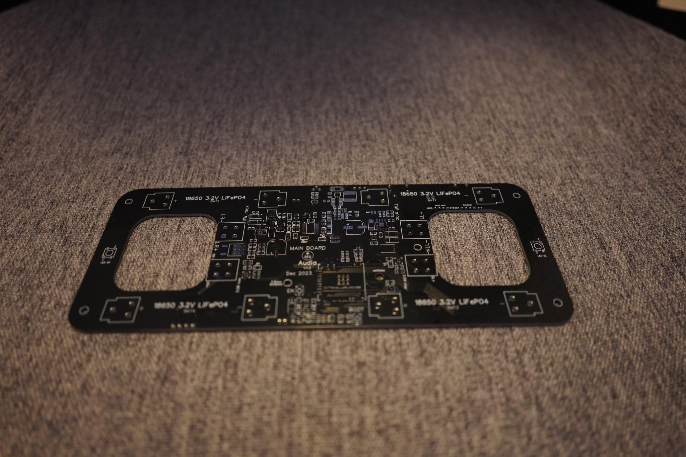

Audia

Project information
- Hardware: ESP32, SSD1306, LiFePO4, PCM5102, HT8693, BQ25071, USB (Type-C and Micro-A), AHT10, WS2812B, capacitive touch, 2 x 10W 4Ω full range spekers
- Firmware/Software: C++, Classic Bluetooth (A2DP, AVRCP, HFP), GitHub, Platform IO, FFT analyzer, IIR filter, FL Studio 20 (SFX production)
- Project Duration: September 01, 2023 - Dec 30, 2023
- Quick Demonstration Video
- Sound and LED Test Video
I enjoy listening to Lofi music while I work. Unfortunately, my Sony SRS-XB10 speaker doesn't have enough battery life to last a full day of continuous use. Charging it while in use could potentially harm the speaker's battery. Also, I am seeking a more visually appealing speaker with a screen to display song information and some lightings to enhance the hearing experience. The project was a chance to push myself to the limit, where I imposed a hard deadline and strictly followed it. It's also the first time I collaborated with another mechanical engineering peer to co-design an unique speaker enclosure.